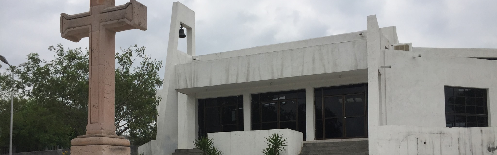

La Parroquia Espíritu Santo ofrece espacios de formación cristiana para niños y jóvenes, acompañándolos en su crecimiento en la fe y en su encuentro con Cristo.
Catecismo Parroquia Espíritu Santo

En este espacio se llevan a cabo las actividades de catequesis, donde los niños reciben formación cristiana y se preparan para vivir su fe dentro de la comunidad parroquial.
Horarios
| Día | Horario | Lugar |
|---|---|---|
| Sábado | 4:00 p.m. - 6:00 p.m. | Parroquia |
| Domingo | 9:00 a.m. - 11:00 a.m. | Parroquia |
Ubicación
Parroquia Espíritu Santo
Dirección pendiente de agregar.
Capilla Jesús Sacerdote

En esta comunidad se ofrece formación catequética para los niños y jóvenes, fortaleciendo su conocimiento de la fe y su participación en la vida de la Iglesia.
Horarios
| Día | Horario | Lugar |
|---|---|---|
| Sábado | 4:00 p.m. - 6:00 p.m. | Capilla |
| Domingo | 9:00 a.m. - 11:00 a.m. | Capilla |
Ubicación
Capilla Jesús Sacerdote
Dirección pendiente de agregar.
Capilla Padre Celestial

Este espacio está destinado a la formación de los niños y jóvenes de nuestra comunidad, brindándoles acompañamiento para crecer en la fe y vivir los valores del Evangelio.
Horarios
| Día | Horario | Lugar |
|---|---|---|
| Sábado | 4:00 p.m. - 6:00 p.m. | Capilla Padre Celestial |
| Domingo | 9:00 a.m. - 11:00 a.m. | Capilla Padre Celestial |
Ubicación
Capilla Padre Celestial
Dirección pendiente de agregar.